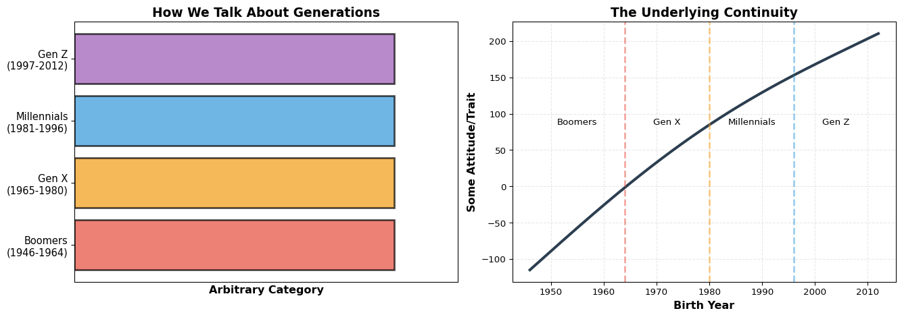

Part 1: When Boundaries Blur
What you’ll learn in this section
Sharp boundaries between categories are often illusions we impose on continuous variation. We’ll explore how regional dialects, generational labels, and even physical objects resist the clean divisions we try to draw around them.
The Soft Drink Divide That Isn’t
Let’s talk about a geographic “fact” that every American knows. The country divides cleanly into three linguistic regions. In the Northeast and West Coast, carbonated beverages are “soda”. In the Midwest, they’re “pop”. In the South, everything is “Coke”, even if you’re drinking Sprite. Maps showing this division circulate widely, with bold lines separating the territories.
The problem is that this boundary doesn’t exist. Drive from Chicago to Atlanta and you won’t cross a line where everyone suddenly switches from “pop” to “Coke”. Instead, you’ll encounter a gradual transition zone spanning hundreds of miles. In St. Louis, you might hear both. In Nashville, “Coke” dominates but “soda” persists. The change is gradational, not binary.
The Harvard Dialect Survey collected data from over 30,000 participants, revealing that most regions show mixed usage rather than categorical dominance. See Vaux & Golder (2003).
Why do we draw the line anyway? Because to analyze language, to create a network of dialectical influences, to define a “region” at all, we need nodes. A node requires a boundary. If everything gradually blends into everything else, we cannot construct the graph that lets us study the system. The boundary is not a feature of reality. It’s a feature of our analytical apparatus.
The Generation Game
This pattern repeats everywhere we look. Consider generational labels. Baby Boomers, Gen X, Millennials, Gen Z. These categories structure entire marketing strategies, political analyses, and cultural narratives. The Pew Research Center officially defines Millennials as those born between 1981 and 1996. This means someone born on December 31, 1996 is a Millennial, but someone born the next day is Gen Z.
Does this make sense? Is there a meaningful discontinuity between these two people that doesn’t exist between someone born in December 1996 and someone born in January 1996? Of course not. The boundary is arbitrary, chosen for analytical convenience. Yet once established, it shapes how we think. We ask “what do Millennials believe?” as if the category reflects a natural kind rather than a statistical convenience.
Code
import matplotlib.pyplot as plt
import numpy as np
fig, (ax1, ax2) = plt.subplots(1, 2, figsize=(14, 5))
# Left: discrete view
generations = ['Boomers\n(1946-1964)', 'Gen X\n(1965-1980)',
'Millennials\n(1981-1996)', 'Gen Z\n(1997-2012)']
colors = ['#e74c3c', '#f39c12', '#3498db', '#9b59b6']
y_pos = np.arange(len(generations))
ax1.barh(y_pos, [1, 1, 1, 1], color=colors, alpha=0.7, edgecolor='black', linewidth=2)
ax1.set_yticks(y_pos)
ax1.set_yticklabels(generations, fontsize=11)
ax1.set_xlabel('Arbitrary Category', fontsize=12, fontweight='bold')
ax1.set_title('How We Talk About Generations', fontsize=14, fontweight='bold')
ax1.set_xlim(0, 1.2)
ax1.set_xticks([])
# Right: continuous view
birth_years = np.linspace(1946, 2012, 1000)
# Create a smooth curve representing actual variation
attitude = 50 + 30 * np.sin((birth_years - 1946) / 20) + 5 * (birth_years - 1979)
ax2.plot(birth_years, attitude, color='#2c3e50', linewidth=3)
ax2.axvline(1964, color='#e74c3c', linestyle='--', alpha=0.5, linewidth=2)
ax2.axvline(1980, color='#f39c12', linestyle='--', alpha=0.5, linewidth=2)
ax2.axvline(1996, color='#3498db', linestyle='--', alpha=0.5, linewidth=2)
ax2.set_xlabel('Birth Year', fontsize=12, fontweight='bold')
ax2.set_ylabel('Some Attitude/Trait', fontsize=12, fontweight='bold')
ax2.set_title('The Underlying Continuity', fontsize=14, fontweight='bold')
ax2.grid(alpha=0.3, linestyle='--')
ax2.text(1955, 85, 'Boomers', fontsize=10, ha='center')
ax2.text(1972, 85, 'Gen X', fontsize=10, ha='center')
ax2.text(1988, 85, 'Millennials', fontsize=10, ha='center')
ax2.text(2004, 85, 'Gen Z', fontsize=10, ha='center')
plt.tight_layout()
plt.show()

The underlying phenomenon we’re trying to capture is real. Cultural attitudes, technology exposure, and economic conditions do vary by birth cohort. But this variation is continuous. The discrete labels we overlay are a choice about how to slice the continuum, not a discovery of where nature has already sliced it.
The Ship of Theseus in Your Body
Let’s push deeper. Perhaps generational boundaries are arbitrary, but surely physical objects have clear boundaries. A ship is a ship. Your body is your body. Right?
The Ship of Theseus paradox asks what happens when every plank of a wooden ship gets replaced over time. After thirty years at sea, not a single original board remains. Is it still the same ship? If you gathered all the discarded planks and reassembled them, which ship is the real Theseus?
The paradox appears in Plutarch’s Life of Theseus (75 CE) and has generated philosophical debate for two millennia about identity and continuity.
Your body presents the same puzzle. Nearly every atom in your body gets replaced on a rolling basis. Your skin cells regenerate every few weeks. Your red blood cells last about four months. Even your skeleton completely rebuilds itself every decade. The “you” that exists today shares almost no physical matter with the “you” of ten years ago. Yet you maintain continuity of identity.
Where is the boundary of “you”? It’s not spatial (your atoms disperse and are replaced). It’s not temporal (you persist despite complete material turnover). The boundary is conceptual, imposed by the observer who needs a stable node labeled “person” to construct social networks, legal systems, and narratives of selfhood.
Code
import matplotlib.pyplot as plt
import numpy as np
from matplotlib.patches import FancyBboxPatch, FancyArrowPatch
fig, ax = plt.subplots(figsize=(12, 6))
# Timeline
years = [0, 5, 10]
x_positions = [1, 5.5, 10]
for i, (year, x) in enumerate(zip(years, x_positions)):
# Draw ship representation
color_intensity = 1 - (i * 0.35)
box = FancyBboxPatch(
(x - 0.8, 2), 1.6, 2,
boxstyle="round,pad=0.1",
facecolor=plt.cm.Blues(color_intensity),
edgecolor='black',
linewidth=2
)
ax.add_patch(box)
# Add label
ax.text(x, 4.5, f'Year {year}', fontsize=12, ha='center', fontweight='bold')
ax.text(x, 1.5, f'{int(100 - i*50)}% original', fontsize=10, ha='center', style='italic')
# Draw arrow
if i < len(years) - 1:
arrow = FancyArrowPatch(
(x + 0.9, 3), (x_positions[i+1] - 0.9, 3),
arrowstyle='->', mutation_scale=30, linewidth=2,
color='gray', alpha=0.6
)
ax.add_patch(arrow)
ax.text((x + x_positions[i+1]) / 2, 3.5, 'Replace\nparts',
fontsize=9, ha='center', style='italic', color='gray')
# Add identity line
ax.plot(x_positions, [3, 3, 3], 'r--', linewidth=3, alpha=0.7, label='Continuous Identity')
ax.set_xlim(0, 11)
ax.set_ylim(0, 5)
ax.axis('off')
ax.set_title('The Ship of Theseus: Identity Without Material Continuity',
fontsize=16, fontweight='bold', pad=20)
ax.legend(loc='upper left', fontsize=11)
plt.tight_layout()
plt.show()
Why Boundaries Matter for Networks
This philosophical excursion has direct implications for how we model systems. Networks require nodes. Nodes require boundaries. But if the phenomena we’re studying are continuous, where do we draw those boundaries?
Consider trying to build a social network. Who counts as a single node? You might say “one person equals one node”, but we’ve just seen that personal identity is fuzzy across time. Do you create separate nodes for past-you and present-you? How about modeling organizational networks? Is a university a single node, or should we break it into departments? If departments, why not individual labs? If labs, why not individual researchers? Each choice slices the continuum differently, producing different network structures and different conclusions.
The same problem appears when studying semantic networks of word meanings, ecological networks of species interactions, or neural networks in the brain. The boundaries we draw are not discoveries. They’re decisions. They reflect our analytical purposes more than the structure of reality.
Traditional machine learning inherits this problem. Classification algorithms learn decision boundaries that divide feature space into regions. Each region gets a label. The boundary is sharp. You’re either Class A or Class B, with no middle ground. This works when categories are truly discrete (an email is spam or not spam), but fails when the underlying phenomenon is continuous (political ideology, disease severity, aesthetic preference).
The Way Forward
What if we could work with the gradation directly instead of forcing it into boxes? What if meaning didn’t require boundaries? This is the insight that representation learning provides. By mapping concepts into continuous vector spaces, we can preserve the relational structure that gives things meaning without imposing artificial divisions.
The next section explores where this insight comes from, tracing it back to structural linguistics and the radical claim that meaning emerges from difference rather than essence. Then we’ll see how modern machine learning operationalizes this philosophical stance, turning it from theory into working technology.
Try it yourself
Think of three categories that feel natural to you (political party, music genre, personality type). For each one, try to identify specific cases that fall on the boundary. Why is it hard to categorize them? What does this reveal about the nature of the category itself?